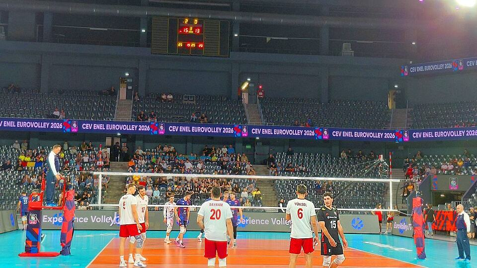

Türkiye-Fransa maçı ne zaman, hangi kanalda?

Görsel: France vs Türkiye 2026 CEV EuroVolley Men 20260912 (2) · -Fatih- · CC BY-SA 4.0 · Wikimedia Commons
A Milli Futbol Takımı, 2026-2027 UEFA Uluslar A Ligi 1. Grup mücadelesine iki iç saha maçıyla başlıyor. Türkiye-Fransa karşılaşması 25 Eylül Cuma, Türkiye-İtalya karşılaşması 28 Eylül Pazartesi oynanacak. İkisinin de başlama saati 21.45. Süper Lig'e verilen ara ise 9 Ekim'de sona eriyor.
Türkiye-Fransa maçı saat kaçta ve hangi kanalda?
TFF'nin resmî fikstürüne göre Türkiye-Fransa karşılaşması 25 Eylül Cuma günü 21.45'te Kocaeli Stadyumu'nda başlayacak. Fotomaç ve Milliyet, maçın atv ekranlarında şifresiz yayımlanacağını aktardı. Karşılaşmayı izlemek için ücretli bir spor paketi gerekmiyor.
Grubun diğer maçları da aynı kanalda. Sporekranı'nın yayın listesine göre 2 Ekim Cuma günü Liège'deki Maurice Dufrasne Stadyumu'nda oynanacak Belçika-Türkiye maçı 21.45'te atv'de. 5 Ekim Pazartesi Bologna'daki Renato Dall'Ara Stadyumu'nda oynanacak İtalya-Türkiye maçının saati de aynı.
atv'nin kanal sırası platformdan platforma değişiyor. Sporekranı'nın listesinde kanal Digiturk ve D Smart'ta 25, Kablo TV, Tivibu ve Turkcell TV+ tarafında 24 numarada görünüyor. Numaralar zaman zaman güncellendiği için maçtan önce platformun kendi kanal listesine bakmakta yarar var.
Aday kadro da belli. Fotomaç'ın haberine göre teknik direktör Vincenzo Montella, eylül ve ekim ayındaki maçlar için 29 futbolculuk bir liste açıkladı. Kadronun maç günü on sekiz kişilik bölümüne kimlerin gireceği henüz açıklanmadı.
Türkiye-İtalya maçı Bursa'da nasıl bir hazırlıkla oynanacak?
Türkiye-İtalya maçı 28 Eylül Pazartesi 21.45'te Bursa'da yapılacak. Tesisin adı kaynaklarda farklı geçiyor: TFF fikstüründe Atatürk Spor Kompleksi, CNN Türk'ün haberinde Yüzüncü Yıl Atatürk Stadyumu olarak yazıldı. İkisi de aynı yeri işaret ediyor.
Bursa Hakimiyet'in aktardığına göre Vali Erol Ayyıldız başkanlığında İl Spor Güvenlik Kurulu toplandı; stadyum çevresindeki güvenlik, taraftar ulaşımı ve maç günü trafik düzenlemeleri görüşüldü. Bursa TV de toplantıya emniyet yetkilileri ile TFF temsilcilerinin katıldığını yazdı.
Bilet tarafında durum net değil. Hürriyet, İtalya maçı için TFF'nin genel satış takvimini henüz paylaşmadığını aktardı. Aynı haberde Fransa maçı biletlerinin 1.000 ile 3.000 lira arasında satıldığı belirtiliyor. Bologna'daki deplasman maçının biletleri ise 14 Eylül'de satışa çıkmıştı.
Süper Lig milli aradan sonra ne zaman devam edecek?
Süper Lig'de altı hafta geride kaldı ve lig milli ara nedeniyle durdu. Türkiye Gazetesi'nin haberine göre 7. hafta 9 Ekim Cuma günü 20.00'de Galatasaray-Kasımpaşa maçıyla açılıyor. Hafta, 12 Ekim Pazartesi oynanacak Eyüpspor-Göztepe karşılaşmasıyla kapanacak.
Aradaki günler de dolu. Aynı habere göre 10 Ekim Cumartesi dört, 11 Ekim Pazar üç maç oynanacak. Yeni Birlik ise milli aranın 21 Eylül'de başlayıp 6 Ekim'de bittiğini yazdı; ligin dönüşüyle son milli maç arasında üç günlük bir boşluk kalıyor.
Milli maç takvimini planlarken nelere dikkat etmeli?
İki iç saha maçı da İstanbul'da değil. Fransa maçı Kocaeli'nde, İtalya maçı Bursa'da oynanıyor. Şehir dışından gidecek seyircinin dönüş planını 21.45'te başlayan bir maça göre kurması gerekiyor. İtalya maçı ayrıca pazartesi akşamına denk geliyor.
Kasımdaki iki maçın saatleri eylül-ekim maçlarıyla aynı değil. TFF fikstürüne göre 12 Kasım'daki Türkiye-Belçika maçı 20.00'de, 15 Kasım'daki Fransa-Türkiye maçı 22.45'te başlayacak. Alışkanlıkla 21.45'i bekleyen, kasımdaki ilk maçın ilk yarısını kaçırır.
“TFF tarafından şu ana kadar resmi bir genel satış takvimi paylaşılmadı.”
— Hürriyet, 22 Eylül 2026
Takip etmek için
- TFF'nin resmî sitesindeki Uluslar Ligi A Ligi 1. Grup fikstür ve puan durumu sayfası (tff.org)
- atv yayın akışı (atv.com.tr) — dört grup maçının da yayıncısı
- Bilet satış duyuruları için TFF'nin resmî internet sitesindeki bilet bölümü
Sık sorulan sorular
Türkiye-Fransa maçı şifresiz mi?
Fotomaç ve Milliyet'in haberlerine göre maç atv'de şifresiz yayımlanacak. Ayrı bir spor paketi gerekmiyor.
Türkiye'nin dört grup maçı da aynı kanalda mı?
Evet. TFF fikstürüne dayanan yayın listelerinde eylül ve ekim ayındaki dört maçın da atv'de olduğu belirtiliyor.
Süper Lig ne zaman devam ediyor?
7. hafta 9 Ekim Cuma günü 20.00'de Galatasaray-Kasımpaşa maçıyla başlıyor.
Olgular şu yayıncıların haberlerinden derlendi: Türkiye Futbol Federasyonu (TFF), Fotomaç, CNN Türk, Milliyet. Metnin tamamı TrendSaphiens tarafından yazıldı; kaynaklarla kelime örtüşmesi %0.0 (eşik %5). Kaynaklarda olmayan bilgi eklenmedi.